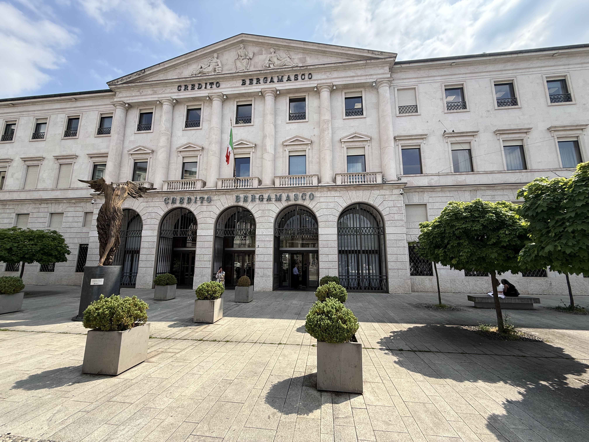
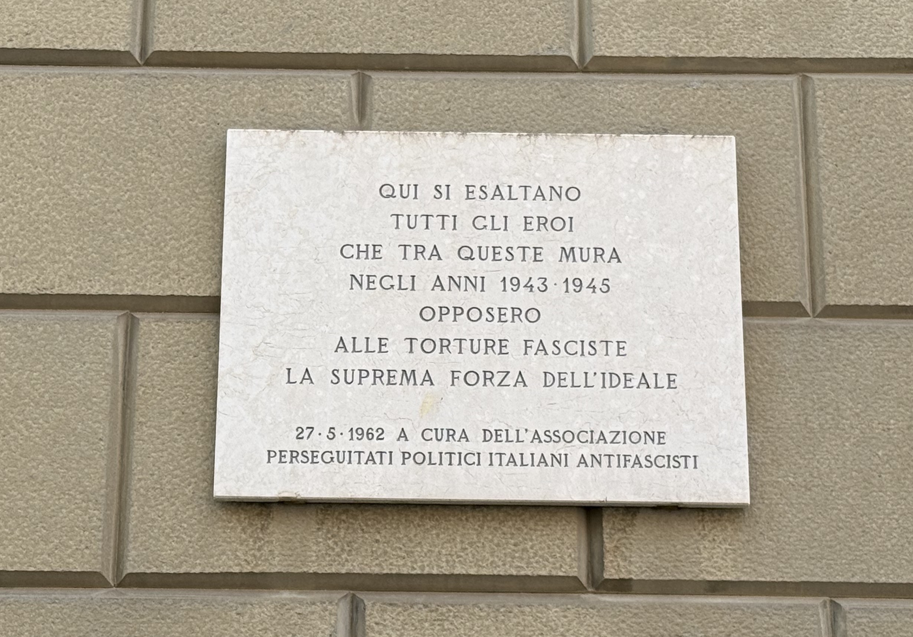
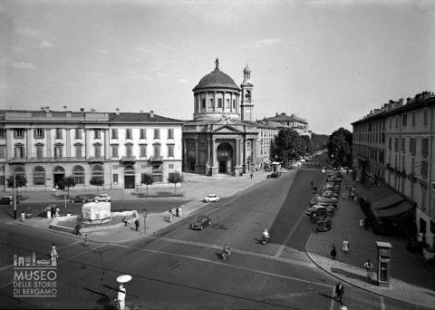

Historical Context
We are at via Gallicciolli 3, in Bergamo, today the headquarters of the Credito Bergamasco.
The origins of the building date back to 1427, when the Franciscan Friars erected a convent and a church dedicated to Santa Maria delle Grazie on this site. Over the centuries the structure underwent several changes: it served as a shelter for the poor and, during the First World War, as a military hospital, before becoming the headquarters of a credit institution in 1928. In 1962 the building was renovated and decorated with frescoes, mosaics and sculptures by prominent Bergamo artists. In 2011, conservation works were carried out on the façade and the square was redesigned, where the large sculpture "Anima Mundi", commissioned by the Fondazione Creberg from Ugo Riva, was installed.
During the Italian Social Republic, the building housed the Collegio Dante Alighieri, which was converted into a barracks for the notorious Compagnia d'Ordine Pubblico (OP) of the National Republican Guard.
Between 1943 and 1945, units specialised in suppressing anti-Fascist opposition operated here, responsible for interrogations, beatings and torture of partisans and political opponents, led among others by Captain Aldo Resmini, commander of the Compagnia d'Ordine Pubblico.
A captain in the National Republican Guard, he commanded the 612th Compagnia d'Ordine Pubblico active in Bergamo during the Italian Social Republic. His unit was notorious for the ferocity of its anti-Fascist repression, and its responsibility for arbitrary arrests, torture and the killing of partisans and political opponents is well documented. After the war, his name appeared in judicial proceedings for crimes committed during the Nazi-Fascist occupation.
🎧 Audio Reading
Why It Is a Place of Memory
This place is a symbol of the violence exercised by the Fascist regime against every form of dissent. Within these walls, numerous people were detained and tortured — their only crime being the defence of freedom and democracy.
The stone plaque, placed on 27 May 1962 by the Associazione Perseguitati Politici Italiani Antifascisti (Association of Italian Anti-Fascist Political Persecutees), commemorates the sacrifice of those who opposed Fascist torture with the strength of their ideals and human dignity.
🎧 Audio Reading
Multimedia Content



In Depth: the Compagnia OP and the Cornalba Massacre
The Compagnia d'Ordine Pubblico of the National Republican Guard that operated from this building was not limited to urban repression, but was also deployed in military operations and round-ups across the province of Bergamo.
One of the most serious episodes was the Cornalba massacre, which took place on 25 November 1944, when Fascist units killed fifteen partisans in the Alta Valle Brembana, as part of the Italian Social Republic's anti-partisan repression.
This connection shows how the violence carried out within these walls was part of a broader repressive system that struck opponents and civilians throughout the province.
🎧 Audio Reading
🎧 Podcast – The Cornalba Massacre
The Cornalba massacre as told in the programme Via libera (25 November 1944), with the contribution of historian Elisabetta Ruffini (ISREC Bergamo).
In Depth: Testimonies
Torture was routinely practised in the rooms of via Gallicciolli. Many chilling testimonies were given after the war; among them, those of Giuseppe Emilio Farina, Vittorio Castelli, Cristoforo Pezzini, Mario Invernicci and Arialdo Banfi deserve particular mention. Banfi's testimony is perhaps the one that most fully captures the tragic weight of the experience: the fragility of the body and the blind brutality of the violence suffered there, set against — in the almost physical closeness of the partisans to one another — the perspective of a truth about life that looks towards the future.
🎧 Audio Reading
🎧 Audio Testimony – Interview with Cristoforo Pezzini
Interview with Cristoforo Pezzini, a direct witness to the violence and repression carried out by the Compagnia d'Ordine Pubblico during the Nazi-Fascist occupation.
🎧 Audio Testimony – Arialdo Banfi, Bergamo partisan of Giustizia e Libertà
Account of the arrest in Milan, on 9 May 1944, of Arialdo Banfi and his transfer to the building that today houses the Credito Bergamasco.
Sources
Bibliographic Sources
- Mario Pelliccioli, Itinerari di memoria. Un percorso a Bergamo tra fascismo, occupazione tedesca e Resistenza, Moltefedi Achille Grandi Editore, Bergamo 2023
- Andrea Caponeri, La banda Resmini nelle sentenze della Corte straordinaria d'Assise di Bergamo (1945–1947), Il filo di Arianna
- Angelo Bendotti, Banditen. Uomini e donne nella Resistenza bergamasca, Il filo di Arianna, Bergamo, 2015
Multimedia Sources
- Podcast on the Cornalba massacre: Rai Radio 3, Via libera – Strage di Cornalba (25 novembre 1944), 25 April 2023.
- Interview with Cristoforo Pezzini: Progetto Memoria urbana , ISREC Bergamo
- AI-narrated reading of Arialdo Banfi's account: reproduction of a passage from Il ponte. Rivista mensile di politica e letteratura, edited by Piero Calamandrei, year V no. 3, March 1949, La nuova Italia.
- Images 1 and 2: Photographic archive of the project, class 5IG Itis P. Paleocapa
- Image 3: La sede della 612^ compagnia di Ordine Pubblico, Progetto Memoria Urbana, ISREC Bergamo